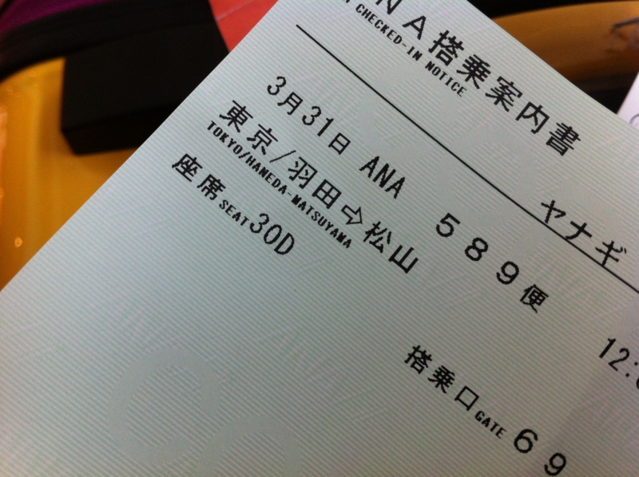
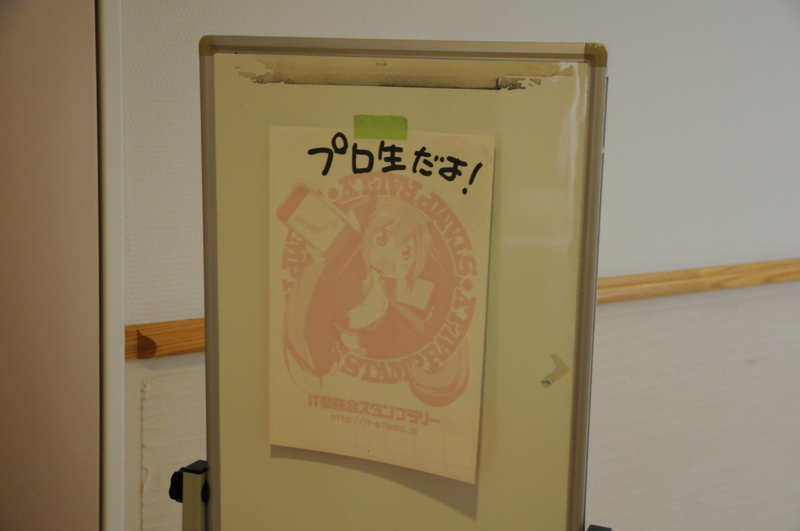
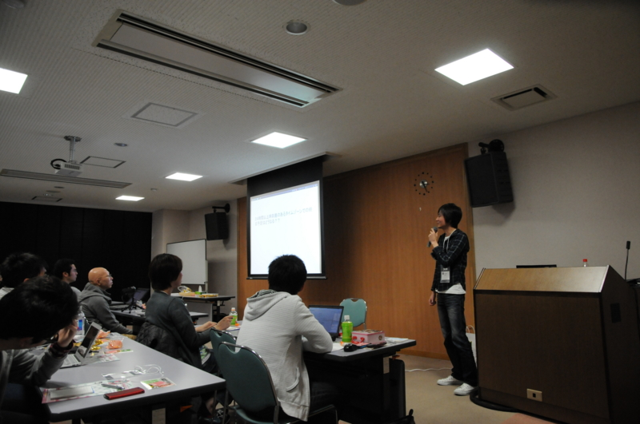
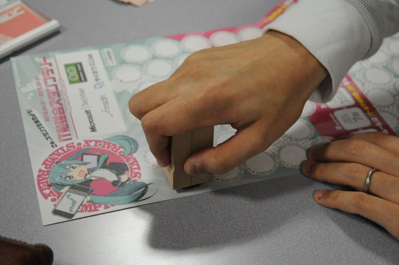

プログラミング生放送勉強会 第13回＠愛媛 に参加してきました #pronama
執筆日時：
日本で一番可愛らしい名前をもつ県・愛媛まで、プログラミングの勉強会へ参加しに行きましたよ！ 実は生まれて初めての羽田空港だよー！ でっかいぞー海が近いぞ―！
でも……余裕をもって5時半に起きて出かけたはずなのに、空港に着いたら飛行機がいませんでした (ﾟ∀ﾟ)ｱﾋｬ？電車の乗り換えとかいろいろ間違って、だいぶ時間をロスしてしまったんですよね……なんという事だ（血涙
旅行気分もすっ飛んで、ドヨーンとした顔で受付にならび、ANA のお姉さんに事情を話すと、すぐに新しい切符を手配してくれた。ところが、「割引なしの航空券って、2万だか3万になるよな……」と思っていたのに、なぜかお金を請求されない。
俺「あの……おいくらになるんでしょうか……((((；ﾟДﾟ))))ｶﾞｸｶﾞｸﾌﾞﾙﾌﾞﾙ」
お姉さん「こっそり予約変更しておきました。今回だけですよ ☆（ゝω・）vｷｬﾋﾟ」

｡ﾟ(ﾟ´Д｀ﾟ)ﾟ｡＜天使やぁ、お母ちゃん、羽田空港に天使がおったでぇ
あとで聞いたところによると、案外柔軟に対応してくれるらしい。でも、いつもやってもらえると甘えちゃいけないですね。とりあえず、そこに路線があるかぎりANA派で通させていただきます (｀･ω･´)ゞ

結局、空席がなかなかなくて、飛行機に乗れたのはお昼の12時。会場についたのは2時過ぎで、1つ目のセッションは終わり、2つ目のセッションの半ばでした。 @you_and_i さんのセッションを聞きそびれたのは残念至極でござる。

というわけで、詳しいセッションの一覧は @nakaji さんのブログでも読んでほしい（丸投げ
プログラミング生放送勉強会 第13回＠愛媛 に参加 #pronama - タイトルは未定
個人的には、@ryokdy さんの i18n の話がとても興味深かった。小数点がカンマで、位取りに小数点使う国があるって、みんな知ってました？ ガとｶﾞを区別すべき？ 同じと扱うべき？ 世界にはとんでもないタイムゾーンがあった！ 一般の人が聞いても十分面白かったんじゃなかったですかね。
また、 @linetlock さんとは懇親会で少しお話を聞く機会があったのだけど、若いのに道を踏み外した色々勉強していて、とても頼もしかった。もっと変態性を高めて広く深く研究を進めていってほしいですね！ 大学生活は知的興奮でいっぱいやでぇ。おじさんも＜モナド＞の意味ぐらいスラスラ説明できるようになるわ。
あとは……COBOLer 多すぎやろ。けれど、自分が知らないだけで COBOL はまだまだ注目すべき第一級言語なのかもしれないな。
日本生まれのプログラミング言語「Ｒｕｂｙ（ルビー）」が、国際標準化機構（ＩＳＯ）と国際電気標準会議（ＩＥＣ）の国際規格として認められた。広く使われている「Ｃ言語」や「ＣＯＢＯＬ（コボル）」などと同列になり、大企業や政府などのプログラムに採用される機会が広がるという。

もちろん、スタンプも押してもらいましたよ！ スタンプって何って言う方は、下記の記事を参照してくだされ。
日本各地で開催されるIT勉強会に参加してスタンプを集めるイベント“IT 勉強会スタンプラリー”が、31日より開始される。開催期間は2013年3月31日までの1年間で、参加は無料。
それでは、来週品川でお会いしましょう ( ´Д｀)ﾉ~ﾊﾞｲﾊﾞｲ